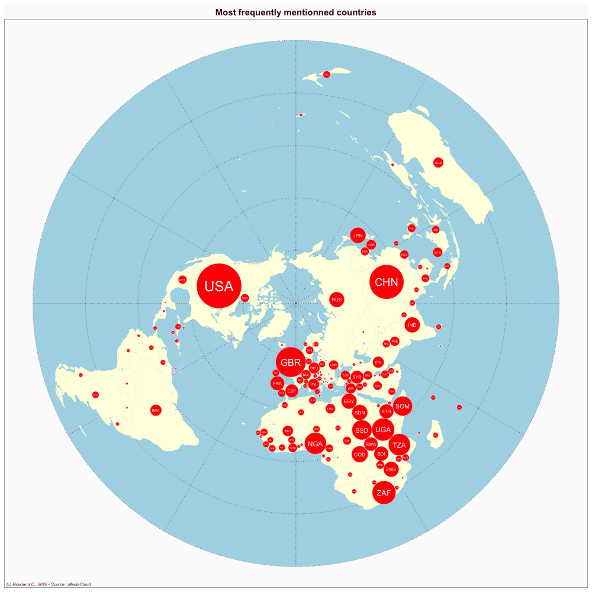

Kenya
- Website : The Standard (Kenya)
Scale
- Global
- National
Topics
- General news
- Political news
- Economic news
Publications
Ekdale B, Tully M. 2019. African elections as a testing ground: Comparing coverage of cambridge analytica in nigerian and kenyan newspapers. African Journalism Studies 40: 27–43